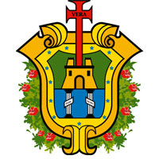

El clima es tropical cálido, con una temperatura media anual de 25.3 °C y precipitación media anual de 1500 mm. Durante los meses de septiembre, octubre, noviembre, diciembre, enero y febrero se presenta el fenómeno conocido como "norte", que son rachas de viento provenientes del Norte y que alcanzan velocidades aproximadamente desde los 50 hasta los 130 kilómetros por hora. En algunas ocasiones la temperatura desciende varios grados, aunque su duración es breve; de uno a tres días. Su vegetación es de tipo selva baja caducifolia, constituida por árboles que pierden sus hojas durante la época invernal y se encuentran árboles como el liquidámbar y el ocote. Hay una gran variedad de animales silvestres, entre los que se encuentran principalmente la garza, gaviota, conejo, tlacuache, ardilla, jaguar, tuza y Manatíes entre otros, además de una gran variedad de insectos. Tradicionalmente afamada nacional e internacionalmente por su riqueza y variedad, la cocina Jarocha es una sabrosa síntesis de la cocina española y la costeña, su doble riqueza nace de la combinación de lo mejor de la comida tropical y lo mejor de la comida marítima, encontramos desde los antojitos típicos hasta los más exquisitos platillos de mariscos y pescados frescos en infinita variedad y toda clase de refrescantes y dulces frutas tropicales, como base de alimentación se considera el maíz, ingrediente principal en muchos de sus guisos entre los que se pueden preparar: Platillos de Tierra: Tortillas , Gordas , Picadas , Empanadas , Chilaquiles , Tamales (de masa y de elote, tamal de cazuela, torta de elote, etc.) , Bocoles , Zacahuil , Pulacles , Glorias , Panuchos , Bomba Tostada. Platillos de Mar: Las jaibas rellenas, chilpachole de jaiba, Pescado en escabeche, huachinango a la veracruzana, pescado a la veracruzana, sopa de mariscos, pulpos en su tinta, jaibas enchilpotladas, hueva de lisa y de naca frita, Arroz a la tumbada, empanadas de camarón, “vuelve a la vida”, langostinos al mojo de ajo. Dentro de la gastronomía veracruzana hay verduras como los quelites, verdolagas, tallos o cojollos de izote, los guajilotes, chompines, calabacitas, pipiancitos y ejotes, de igual manera la gran variedad de frutas de acuerdo a la temporada como la piña, sandía, coco, mamey, mango, nanche, papaya, uvas, limas y limones, chirimoyas, plátanos y guanábanas. El café tomado con una canilla en el Gran Café de La Parroquia que fundado desde 1808 es un icono de la tradición veracruzana, y hay un dicho que dice: "Si vienes a Veracruz y no vienes al Café de la Parroquia a tomar un café, es como si no hubieras venido a Veracruz". El ir a los portales, a escuchar música desde sones jarochos, danzón, salsa, marimba, acompañado de una cerveza y un queso de hebra preparado... "si no te emborrachaste en los portales, es como si no hubieras venido a Veracruz".
